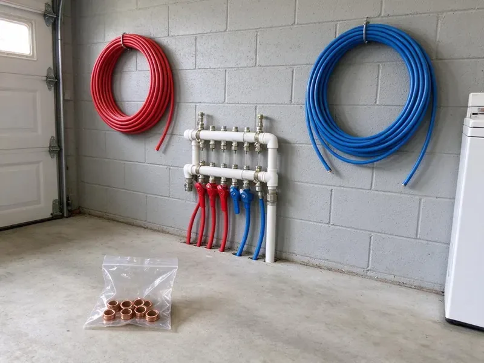

Backflow Preventer Installation in Mount Pleasant, SC
KBN Plumbing installs backflow preventers in Mount Pleasant, SC that protect your drinking water and satisfy local cross-connection requirements.
- Local Crews
- Written Prices Up Front
- Workmanship Warranty
- Freeze Enclosures

Get Backflow Compliant Without the Hassle in Mount Pleasant, SC
Call KBN Plumbing for a backflow install that meets local code.
Backflow Devices for Mount Pleasant, SC Homes and Businesses
KBN Plumbing handles the job from the first look at your plumbing to the final inspection. We find each cross-connection and match a device to it, then install it with unions and isolation valves so it can be tested and serviced in Mount Pleasant without cutting pipe. Serviceable means cheaper later.
Some of what we do:
- Pressure vacuum breakers for irrigation
- Certified backflow testing on site
- Double check valve assembly installation

Additional Plumbing Installation Services in Mount Pleasant, SC
We install water heaters, pumps, lines, and fixtures across Mount Pleasant, SC with careful, permitted work that passes inspection the first time.


Customers
Why Choose KBN Plumbing for Backflow Preventer Installation in Mount Pleasant, SC?
Every install we do follows local and state plumbing codes in Mount Pleasant. The device is set at the right height, level and oriented correctly, the test cocks face out, and the relief valve on an RPZ has somewhere to drain without soaking a wall. Testers can tell.
- Hazard Matched, The device fits the actual hazard, health or pollution.
- Paperwork Handled, Test reports go to your water provider from us.
- Property Protection, Stopping backflow protects your whole plumbing system and avoids costly cleanup.
Citywide Coverage
From single-family irrigation to strip centers and medical offices, we install backflow devices across Mount Pleasant. Each type of property has its own hazard, and we choose the device for the hazard in front of us rather than the one that happens to be cheapest that week. Small jobs get the same care.
Experienced Team
Certified backflow testers are part of our team in Mount Pleasant. They know each device inside, down to the springs and seats, and they stay current on South Carolina plumbing codes, which leads to cleaner installs and far fewer failed tests on the jobs we hand off. Failed tests cost you money.
Safety-First Approach
Permits get pulled where the local rules require them. Each device is tested and tagged before service, with the date, the tester's certification number and the readings written on the tag and on the report we send to your provider. Leave the tag attached.
Trusted Certified Mount Pleasant Plumbing Services Professionals
At KBN Plumbing, we take pride in licensed, certified plumbing services throughout Mount Pleasant, SC. Those papers on the wall mean something. Our plumbers hold recognized industry credentials, and they follow strict safety and quality rules on every repair, installation and maintenance call we run.
Call Us Now PHCC Plumbing Contractor Recognition
PHCC Plumbing Contractor Recognition Better Business Bureau (BBB) Accreditation
Better Business Bureau (BBB) Accreditation Angi Certified Pro
Angi Certified Pro ISO 9001 Quality Management Certification
ISO 9001 Quality Management CertificationBackflow Preventer Installation Services in Mount Pleasant, SC
Backflow Enclosures and Freeze Protection in Mount Pleasant, SC
Above-ground assemblies bake in summer sun and can freeze on a cold night. Pipes in crawlspaces, exterior walls and unheated garages are the ones most likely to burst during a South Carolina cold snap, since many homes were built with little insulation around them. We install insulated enclosures or heated cabinets as needed, and a locking enclosure also stops scrap thieves, who target brass assemblies because they are easy to unbolt and sell by weight in Mount Pleasant, SC. Enclosures leave room for testing.

Backflow Preventer Installation Cost Comparison in Mount Pleasant, SC
A residential PVB is the least expensive device we install. Commercial RPZ assemblies cost far more in parts and labor, and size, brand, enclosure and pipe changes all move the number, but replacing a worn old device often costs less than paying for a rebuild every year. Our quote covers the first certification.
Emergency Backflow Preventer Replacement in Mount Pleasant
A failed backflow device can mean a compliance letter or a shutoff notice. We pull the bad unit and set a new one, usually the same day in Mount Pleasant, with unions on both sides so the next repair is a quick swap instead of a cut-and-solder job on a cold morning. The test happens before we leave.
Pressure Vacuum Breaker (PVB) Installation in Mount Pleasant, SC
Pressure vacuum breakers are the low-cost answer for lawn irrigation in Mount Pleasant, SC. They let air in when supply pressure drops, which breaks the siphon, but they only protect against back-siphonage, so they must sit above every downstream outlet and cannot be used where back pressure is possible. Clearance and drainage get checked as well.
Commercial Backflow Preventer Installation in Mount Pleasant
Soda machines and boilers each create a cross-connection inside a business. Our plumber walks the building and records each one, install containment at the meter and isolation devices at each hazard, and give you documentation for every device for your records and for your water provider in Mount Pleasant. After-hours work keeps you open.
Residential Backflow Devices in Mount Pleasant
Homes with irrigation or a fire sprinkler line often need a device to keep that water out of the municipal supply. The hazard decides which assembly we install, then mount it where the tester can reach it. Pipes in crawlspaces, exterior walls and unheated garages are the ones most likely to burst during a South Carolina cold snap, since many homes were built with little insulation around them. Exposed devices get freeze-rated parts and a cover.
Backflow Prevention for Irrigation Systems in Mount Pleasant, SC
Sprinkler heads sit in fertilizer and standing water, and a pressure drop on the main can siphon that water back into the house. A pressure vacuum breaker stops back-siphonage on most residential systems, and we mount it at least 12 inches above the highest sprinkler head so it can do its job in Mount Pleasant, SC. Mounting height is the common mistake.

Pool and Spa Fill Backflow Protection in Mount Pleasant, SC
Pool auto-fill lines and hose connections give chlorinated water a straight path back to the supply. We add the right device on the fill line, check that every hose bibb has a vacuum breaker, and can fold the work into a pool build or remodel so it is done before the deck goes in. A hose bibb vacuum breaker costs a few dollars.
Backflow Preventer Installation Near Me in Mount Pleasant, SC
Got a notice from your water provider and searched for a backflow installer nearby? Call us with the notice in hand, and we can usually schedule installation and testing within a few days, making sure the device matches exactly what the letter asks for. Most notices give 30 to 60 days.
Searching for backflow preventer installation near me in Mount Pleasant, SC? Our crew knows the local providers and their rules, which means we can usually tell from your notice which device you need before we even get to the property. That speeds things up.
KBN Plumbing at a Glance
- Fully licensed plumbing team covering Mount Pleasant, SC
- 24/7 emergency service with same-day scheduling
- Clear written estimates, no hidden fees
- 4.8-star rated by 596+ South Carolina customers
Mount Pleasant Map
Mount Pleasant Information
- Population
- 95,232
- Area codes
- 843/443/803
- Service area
- Mount Pleasant and towns within a 40 mile drive
- Nearby
- Charleston, North Charleston, Goose Creek, Summerville
Lawn irrigation is everywhere in Mount Pleasant, SC, and every sprinkler tie-in is a place where dirty water can backflow into the house supply.
Talk to a Plumber
Call KBN Plumbing for reliable plumbing work done by licensed pros in Mount Pleasant, SC.
Our Specialized Plumbing Services in Mount Pleasant, SC
At KBN Plumbing, you get every kind of plumbing service from one company across Mount Pleasant, SC. We go from leak detection all the way to full system installations, for homes and commercial buildings, and we do it quickly at a fair price. Here are the core services we offer:


What a Backflow Install Looks Like in Mount Pleasant, SC
Every backflow install in Mount Pleasant follows the same steps, so nothing gets missed.
Request a Quote
Call (864) 588-3813 or use the website and tell us what the device protects. We collect the basics about your property.
On-Site Assessment
A licensed plumber visits your Mount Pleasant property, locates the cross-connections and picks the device type and size local code requires.
Professional Installation
We install the assembly with unions and isolation valves, set at the right height, then test it to manufacturer specs.
Frequently Asked Questions About Backflow Preventer Installation in Mount Pleasant
Residential PVBs usually cost $250 to $700 installed. Double check and RPZ assemblies for larger homes or businesses run $800 to $3,500 or more, depending on size and whether you need an enclosure.
At each cross-connection, where non-potable water could reach the potable side. Common spots are irrigation tie-ins, fire lines and boiler feeds, plus auxiliary water supplies, often just after the meter for containment or right at the piece of equipment for isolation. Some buildings need both.
No, not for testable assemblies. Installation has to meet code and be certified, and a bad install can lead to contamination, fines and a second visit from the water provider that costs more than doing it right the first time. This one is for a pro.
Usually, yes, especially on systems tied to the municipal supply. The permit and inspection are on us, and we make sure the device passes before the provider's deadline in Mount Pleasant. The fee is in the quote.
Watts, Wilkins by Zurn, Apollo and Conbraco are the brands we install most. The model gets picked by size and hazard level, then by budget, and every one of them has rebuild parts that local supply houses carry. Parts availability matters for testing.
We install all the common ones, including reduced pressure zone assemblies, double check valve assemblies and pressure vacuum breakers. Hazard level and local code pick the device in Mount Pleasant, and we explain the choice before we install anything. A few providers name the exact model.
Backflow is water flowing the wrong way through a pipe, carrying contaminants into the clean supply. It happens from back-siphonage during a pressure drop or back pressure from pumps and boilers.
Two to four hours covers most residential installs. Large commercial work or major repiping takes longer, sometimes a full day, especially when the water provider requires the shutoff to happen outside business hours. You get a schedule up front.
What People Are Saying About Our Plumbing Experts?

Megan L.
Our upstairs tub drained so slowly that every shower turned into a bath. KBN Plumbing pulled a wad of hair out of the stopper and then snaked the line past the trap. Three months later it still drains fast.
Drain Cleaning · Hilton Head Island, SC
Monica A.
Our water bill nearly doubled in one month with no change in how we used water. The tech checked the meter, heard the leak under the hallway with his equipment, and opened a hole about a foot square. Fixed the same day.
Slab Leak Repair · Summerville, SCLaura S.
Our 40 gallon tank started leaking from the bottom after thirteen years. The tech hauled the old one out, set a new unit with a fresh expansion tank, and had hot water running in about four hours. He took the old tank with him too.
Water Heater Replacement · Mount Pleasant, SC
Robert G.
The camera showed a full break in our clay sewer line near the street. KBN Plumbing replaced it with a trenchless pipe burst, so the only digging was two small pits in the yard. They let us watch the footage before and after.
Sewer Line Replacement · Hilton Head Island, SC
Greg S.
I manage a small strip center with six tenants. KBN Plumbing handles our annual backflow testing and fixed a recurring clog in the shared sewer line that had been backing into the nail salon. Their reports come in clean and on time.
Commercial Plumbing · Goose Creek, SCKevin O.
Before buying our house I paid for a sewer camera inspection. KBN Plumbing found a belly in the line that held standing water about forty feet from the cleanout. We used the video to get the sellers to fix it before closing.
Sewer Camera Inspection · Mount Pleasant, SC